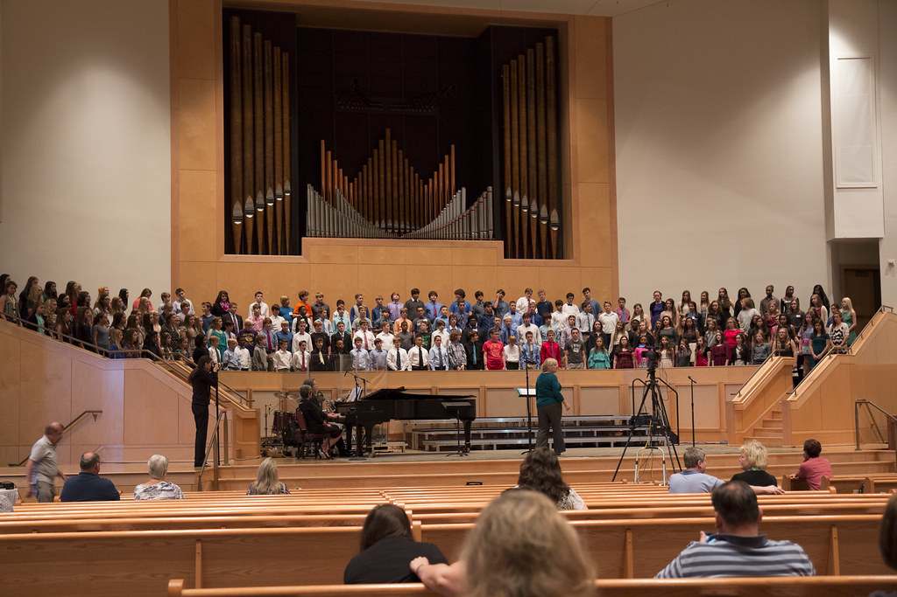
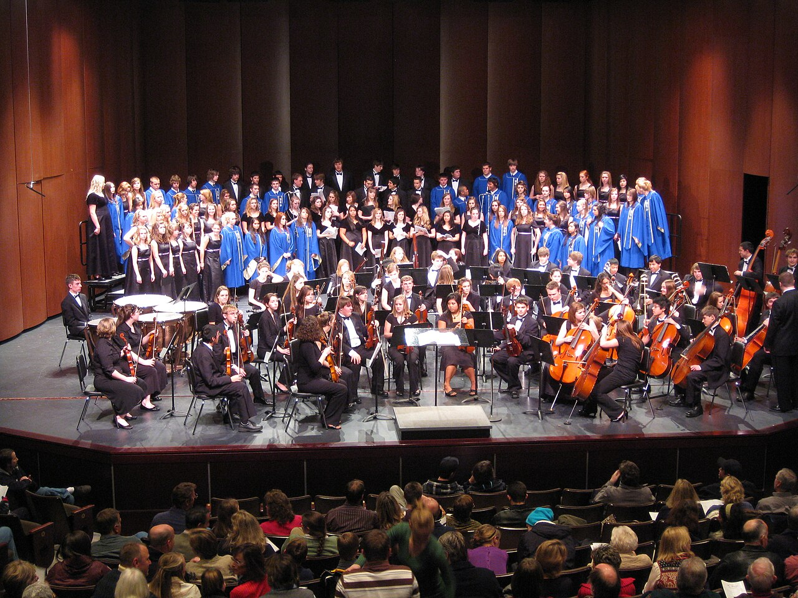

Музыка · 22-бөлім · Фактура Music · Section 22 · Texture Музыка · Раздел 22 · Музыкальная фактура
Фактура — музыкалық матаны баяндау тәсілі: дауыстардың қалай орналасуы және өзара әрекеттесуі. Texture is the way the musical fabric is laid out — how the voices are arranged and interact. Фактура — способ изложения музыкальной ткани, то, как расположены и взаимодействуют голоса.
Фактура — музыкалық матаны (тканьды) баяндау тәсілі. Ол дауыстар мен әуендердің қалай орналасқанын және бір-бірімен қалай әрекеттесетінін көрсетеді. Texture is the way of presenting the musical fabric. It describes how the voices and melodies are arranged and how they interact with one another. Фактура — это способ изложения музыкальной ткани. Она показывает, как расположены голоса и мелодии и как они взаимодействуют друг с другом.
💡 Бір ноталардан түрлі «маталар» тоқуға болады: бір ғана дауыс, әуен мен сүйемелдеу немесе бірнеше тең әуен. Сол үш негізгі түрі — монодия, гомофония, полифония. 💡 The same notes can be woven into different "fabrics": a single voice, a melody with accompaniment, or several equal melodies. These are the three main types — monody, homophony, polyphony. 💡 Из одних и тех же нот можно соткать разные «ткани»: один голос, мелодию с сопровождением или несколько равных мелодий. Это три главных типа — монодия, гомофония, полифония.

| ТүріTypeТип | Бұл неWhat it isЧто это | МысалExampleПример |
|---|---|---|
| МОНОДИЯMONODYМОНОДИЯ | бір дауыстылық — сүйемелдеусіз бір ғана дауыс/әуенa single voice — one voice/melody with no accompanimentодноголосие — один голос/мелодия без сопровождения | жеке айтылатын халық әні, григориан хоралыa solo folk song, Gregorian chantнародная песня соло, григорианский хорал |
| ГОМОФОНИЯHOMOPHONYГОМОФОНИЯ | (гомофонды-гармониялық) бір басты әуен + сүйемелдеу (аккордтар); ең көп тараған түрі(homophonic-harmonic) one main melody + accompaniment (chords); the most common type(гомофонно-гармоническая) одна главная мелодия + аккомпанемент (аккорды); самый распространённый тип | сүйемелдеуі бар әндердің көбі, романстарmost songs with accompaniment, romancesбольшинство песен с сопровождением, романсы |
| ПОЛИФОНИЯPOLYPHONYПОЛИФОНИЯ | көп дауыстылық — бір мезгілде бірнеше тең құқылы дербес әуенpolyphony — several equal, independent melodies at the same timeмногоголосие из нескольких равноправных самостоятельных мелодий одновременно | И. С. Бахтың фугасы, канонa fugue by J. S. Bach, a canonфуга И. С. Баха, канон |
МонодияMonodyМонодия
бір дауыс, сүйемелдеусізone voice, no accompanimentодин голос, без сопровождения
1ГомофонияHomophonyГомофония
әуен + аккомпанементmelody + accompanimentмелодия + аккомпанемент
1+♪ПолифонияPolyphonyПолифония
бірнеше тең әуенseveral equal melodiesнесколько равных мелодий
N🎧 батырманы басып, әр фактураны тыңдаңыз tap a button and listen to each texture нажмите кнопку и послушайте каждую фактуру
💡 Монодия — жалғыз желі; гомофония — бір әуеннің астында ұсталған аккорд; полифония — бір-бірімен өрілетін бірнеше тең әуен. 💡 Monody is a single line; homophony is a held chord under one melody; polyphony is several equal melodies interweaving. 💡 Монодия — одна линия; гомофония — выдержанный аккорд под одной мелодией; полифония — несколько равных мелодий, сплетающихся вместе.

Көбіне бір шығармада фактура ауысып отырады: жеке әуен (монодия) хор сүйемелдеуіне (гомофония) ұласып, фуга бөлімінде дербес дауыстар (полифония) өріле бастайды. Often the texture changes within a single piece: a solo melody (monody) grows into a chordal accompaniment (homophony), and in a fugue section independent voices (polyphony) begin to weave together. Часто фактура меняется внутри одного произведения: сольная мелодия (монодия) переходит в аккордовое сопровождение (гомофония), а в эпизоде-фуге сплетаются самостоятельные голоса (полифония).
📌 Гомофония — ең көп тараған түр: бүгінгі әндердің көбі осы (бір әуен + аккордтар). Полифония барокко (И. С. Бах) дәуірінде ерекше дамыды. 📌 Homophony is the most common type: most of today's songs use it (one melody + chords). Polyphony flourished especially in the Baroque era (J. S. Bach). 📌 Гомофония — самый распространённый тип: большинство сегодняшних песен именно такие (одна мелодия + аккорды). Полифония особенно расцвела в эпоху барокко (И. С. Бах).